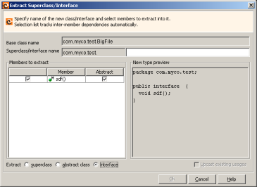

Extract Interface enables you to extract methods and static constants from a class into a new interface where the original class will implement the new interface. Only public instance methods can be extracted and fields must be declared as public static final in order to be extracted.
To extract an interface:

Extract Interface in Martin Fowler's online catalog of refactoring operations